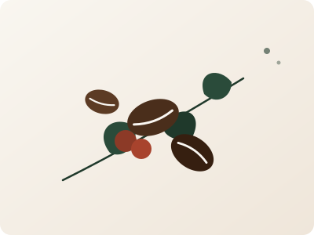
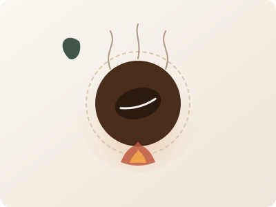
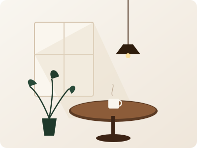

精選咖啡豆
嚴選世界高海拔產區單品莊園生豆，堅持產地透明溯源，帶來乾淨、層次豐富的花果清甜與可可尾韻。
「讓咖啡，陪你慢下來。」
晴天咖啡創立於對自然與生活的沉靜體悟。我們相信，咖啡不只是清晨的提神飲品，更是忙碌步調裡的一處喘息之地。在木質暖調與綠意圍繞的空間中，我們以嚴選生豆與微批次烘焙工藝，為你保留咖啡豆最原始的天然花果芳香。
從產地生豆的挑選、烘焙溫度的微調，到每一張桌椅的空間留白，皆傾注了對品質的執著。

嚴選世界高海拔產區單品莊園生豆，堅持產地透明溯源，帶來乾淨、層次豐富的花果清甜與可可尾韻。

採取小量微批次烘焙，精準掌握烘焙曲線與脫水火候，激發每顆咖啡豆最純粹的天然甜感與柔和酸香。

結合溫暖的原木質地、自然採光與療癒植栽，打造不被打擾的寧靜場域，陪伴你專注閱讀或放空休憩。